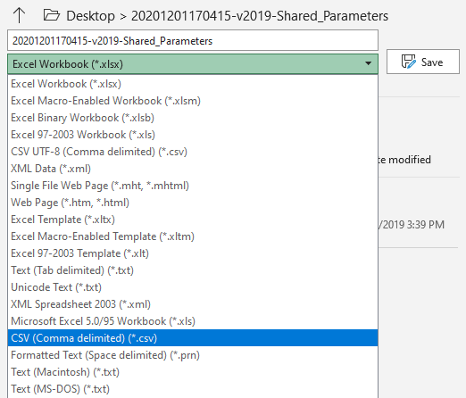
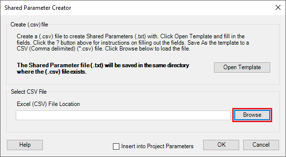
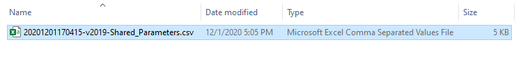
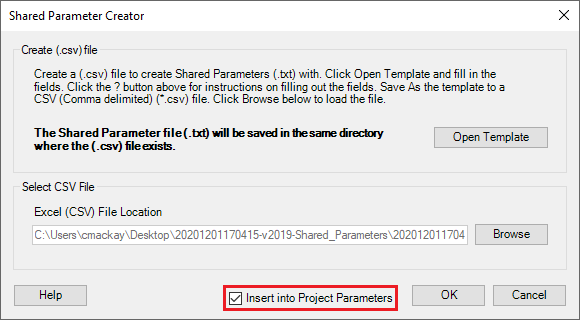

Shared Parameter Creator
Shared Parameter Creator

 Shared Parameter Creator allows you to create an entire Shared Parameter (.txt) file from a CSV (Comma delimited) (*.csv) file. You also have the option to insert the newly created parameters directly into your project all at once.
Shared Parameter Creator allows you to create an entire Shared Parameter (.txt) file from a CSV (Comma delimited) (*.csv) file. You also have the option to insert the newly created parameters directly into your project all at once.
Follow the steps below to create your Shared Parameter file
- Click Open Template. This will create a working directory on your Desktop and open a working file for you to use.
Below are the available fields for you to enter data. The items that do not have a drop down list are provided by you and can be anything.
- Category: Select the category that you want this parameter to be associated with. The available categories can be found in the drop down list.


- Shared Parameter Group (User Defined): The group the parameter will be filed under in Edit Shared Parameters


- Type of Parameter: This defines what type of data you want the parameter to store


- Binding: This defines whether you want the parameter to be a Type parameter or an Instance parameter


- Parameter Name (User Defined): Provide a name for the parameter


- Category: Select the category that you want this parameter to be associated with. The available categories can be found in the drop down list.
- Save As the working file as a CSV (Comma delimited) (*.csv) file. The file will be saved in the working directory on your Desktop. 
- Click OK in the dialog message below, then close Excel.
- Click Browse to select the (.csv) file to create the Shared Parameters (.txt) file. The open file dialog will default to the working directory on your Desktop. 
- Select the (.csv) file from the dialog 
- Insert into Project Parameters (Optional): You have the option to insert all the newly created parameters directly into your project all at once


- Click OK, then Yes to confirm and the Shared Parameter (.txt) file will be created in the working directory on your Desktop. Below are the final contents of the working directory.